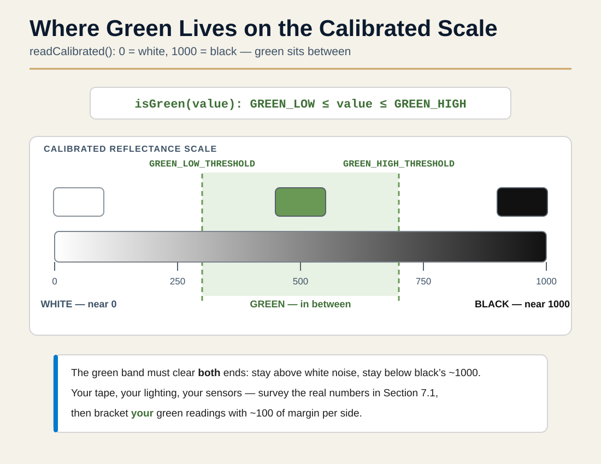
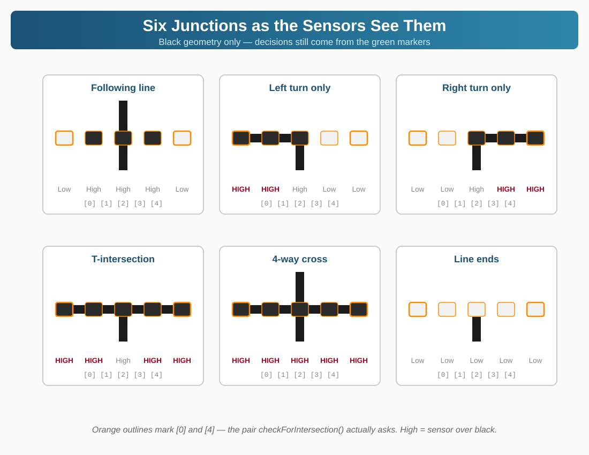
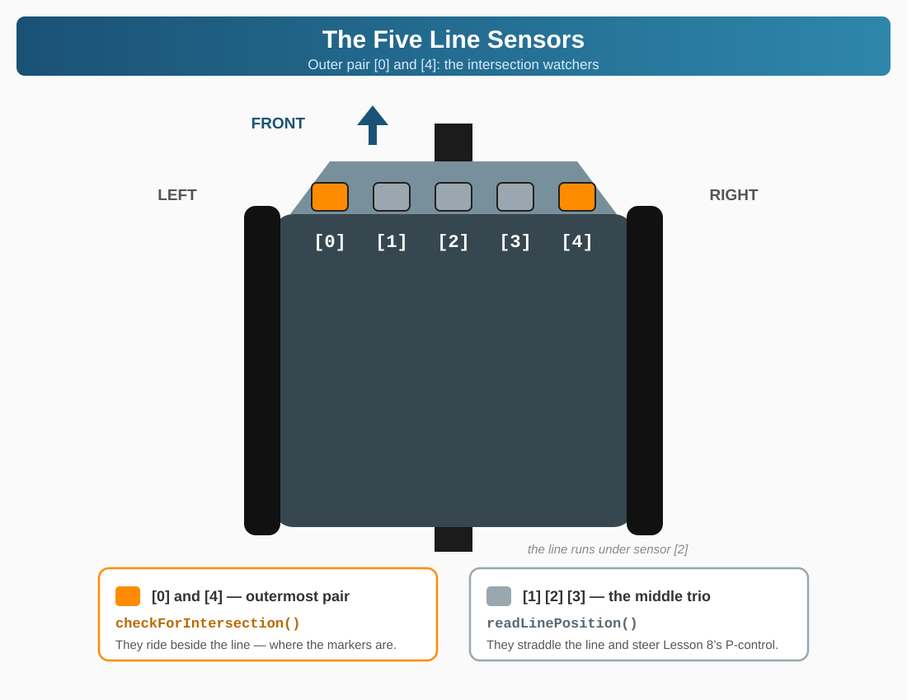
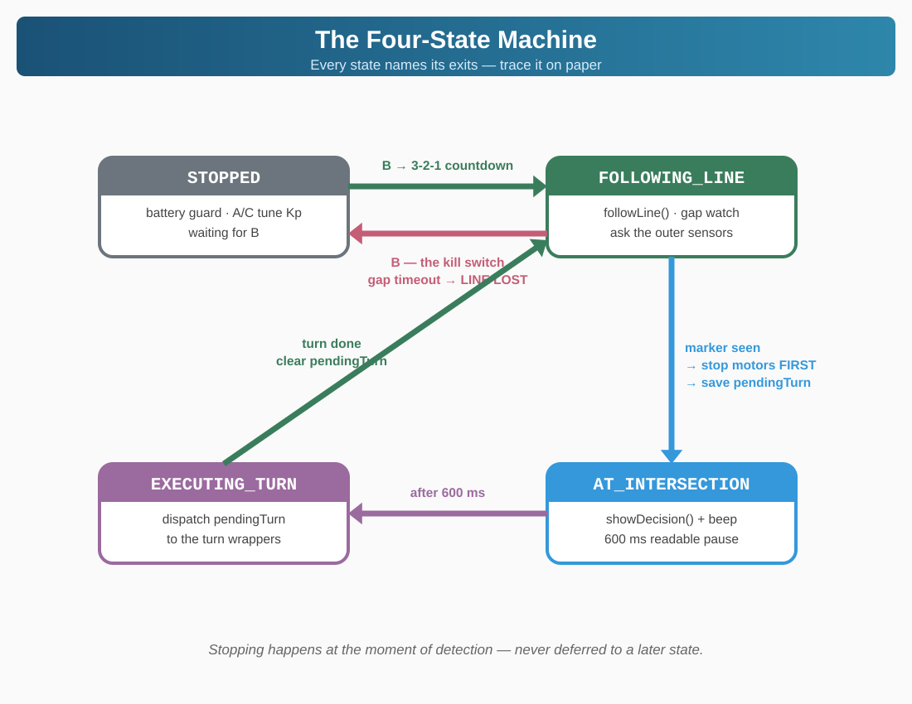

3.1 How the Robot "Sees" Green
Remember how line sensors work from Lesson 4? They shine infrared (IR) light and measure how much bounces back:
- White surfaces reflect a lot of IR → Low calibrated values
- Black surfaces absorb IR → High calibrated values
📖 Why Green Works
Green surfaces absorb some IR light but reflect the rest. This gives us mid-range values (~300–700) that are distinctly different from both white and black.
| Surface | Typical Sensor Values | Classification |
|---|
| White (floor) | < 200 (high reflectance) | LOW |
| Green (marker) | ~300–700 (medium reflectance) | MID (Green!) |
| Black (line) | > 800 (low reflectance) | HIGH |
🔑 Threshold
— A boundary value used to categorize sensor readings. Values above or below the threshold trigger different behaviors.
💡 TIP
Calibration Required
These threshold values are approximate! Calibrate for YOUR green: expect mid-range values for green, versus black and white at the extremes. The calibration test in Section 7 gives you exact numbers.

3.2 Intersection Types
Green markers are placed beside the line to indicate which way to turn. Your robot detects them with the outer sensors — sensor 1 and sensor 5, which report into array boxes [0] and [4]:
| Green Detected On | Intersection Type | Action |
|---|
LEFT only — sensor 1, box [0] | Turn Left | Execute 90° left turn |
RIGHT only — sensor 5, box [4] | Turn Right | Execute 90° right turn |
BOTH sides — boxes [0] AND [4] | Dead End | Execute 180° turnaround |
| Neither side | No Intersection | Continue line following |
📘 NOTE
What About Cross (+) Intersections?
At a cross intersection, all center sensors see black. Without green markers, go straight by default. Advanced robots use the "right-hand rule" for maze solving (see Challenge 6)!
3.3 Sensor Pattern Reference: What Each Intersection Looks Like
📖 LEARN: Reading Sensor Patterns
The Zumo has five line sensors, numbered 1–5 from left to right. Their readings land in an array whose positions run 0–4 — so sensor 1’s reading lives in sensorValues[0] and sensor 5’s in sensorValues[4]. Lesson 4 called this out as the number-one bug in the book: the index counts from zero; it does not name the sensor. The table below names the sensors and shows the box each one reports into — because the code you write in Step 4 addresses the boxes.
When following a line, typically only the middle sensors (2, 3, 4) see it. At an intersection, the outer sensors — 1 and 5, in boxes [0] and [4] — suddenly see line too.
Here's what the black geometry of each junction looks like to your sensors. Read it for sensor literacy — then note carefully: our robot's decisions don't come from this geometry. They come from the green markers (Section 3.1). The geometry says an intersection exists; the marker says what to do about it.
| Intersection Type |
Sensor 1 [0]
(Far Left) |
Sensor 2 [1]
(Left) |
Sensor 3 [2]
(Center) |
Sensor 4 [3]
(Right) |
Sensor 5 [4]
(Far Right) |
Following Line
(no intersection) | ⬜ Low | ⬛ High | ⬛ High | ⬛ High | ⬜ Low |
| Left Turn Only | ⬛ HIGH | ⬛ HIGH | ⬛ High | ⬜ Low | ⬜ Low |
| Right Turn Only | ⬜ Low | ⬜ Low | ⬛ High | ⬛ HIGH | ⬛ HIGH |
T-Intersection
(left + right) | ⬛ HIGH | ⬛ HIGH | ⬛ High | ⬛ HIGH | ⬛ HIGH |
| 4-Way / Cross | ⬛ HIGH | ⬛ HIGH | ⬛ HIGH | ⬛ HIGH | ⬛ HIGH |
| Line Ends (gap — or a true dead end) | ⬜ Low | ⬜ Low | ⬜ Low | ⬜ Low | ⬜ Low |
🔍 INSIGHT — Two of these rows matter later
An unmarked all-black crossing (the 4-Way row) has no green anywhere — the base build correctly drives straight through it, exactly what a RoboCup course expects. Challenge 6 turns that same all-black signature into the right-hand rule. And the all-white row is what handleGap() has been handling since Lesson 8.


🔑 Dead End
— An intersection marked with green on both sides, signaling the robot to turn 180°.
3.4 What is a State Machine?
🔁 Builds on:
the Variable Speed Test from Lesson 3

— Button B cycling four speeds was a state machine. You built one before you had the name.
Here's a problem: your robot detects green on the left and starts turning. But as it turns, the sensor might briefly see green again. Should it start another turn? This is where a state machine saves the day.
🔑 State Machine
— A programming pattern where a system can only be in ONE specific state at a time, and has defined rules for transitioning between states.
Real-world analogy: think of a traffic light—always in exactly one state (RED, YELLOW, or GREEN), never two at once.
| State | What the Robot Does | Transitions To |
|---|
FOLLOWING_LINE | Normal P-control line following | → AT_INTERSECTION (if green) |
AT_INTERSECTION | Stop, identify intersection type | → EXECUTING_TURN |
EXECUTING_TURN | Perform the turn maneuver | → FOLLOWING_LINE (when done) |
STOPPED | Motors off, waiting for button | → FOLLOWING_LINE (on press) |

💡 TIP
Best Practice: One Action Per State
Keep each state simple—it should do one thing. When in EXECUTING_TURN, the robot ignores new intersection readings. This prevents the "double detection" problem and makes debugging much easier!
3.5 Using Enums for States and Types
We could use plain numbers for states, but that's confusing—state = 0 tells you nothing. A better way is an enum:
🔑 Enum (enumeration)
— A data type that defines a set of named constants. Instead of "0 means following," you just use
FOLLOWING_LINE.
enum RobotState {
STOPPED, // Motors off, waiting for B
FOLLOWING_LINE, // P-control driving
AT_INTERSECTION, // Announcing the decision
EXECUTING_TURN // Turning on encoders
};
enum IntersectionType {
NO_INTERSECTION, // Plain line - keep driving
GO_LEFT, // Green marker on the left
GO_RIGHT, // Green marker on the right
DEAD_END // Green on BOTH sides
};
3.6 Turn Execution Strategies
There are three ways a robot can execute a 90° tank turn — and you already own the good one:
| Method | How It Works | Verdict |
|---|
| Timed Turn | Spin for a fixed number of milliseconds and hope | ❌ Battery-dependent, surface-dependent — the naive baseline. Not used in this book. |
| Encoder Turn | Spin until the encoders measure the target angle | ✅ This lesson's method — and you built it in Lesson 6: it's called turnDegrees() and it has been living in RobotMotion.cpp ever since. |
| Line-Seeking Turn | Turn most of the way, then creep until the center sensor finds the line | ✅ Self-correcting — the competition upgrade. That's Challenge 3. |
🔑 Tank Turn
— A turning method where opposite wheels spin in opposite directions, rotating in place. Momentum can cause a little overshoot — encoder turns absorb most of it, and consistent error tunes out via WHEEL_BASE_MM (Lesson 7’s one-number tune-up).
📘 NOTE
The Lesson 6 Dividend
Remember turnDegrees() from Lesson 6? It already turns by encoder counts, already averages both wheels, already ignores battery sag. And it deliberately does not use TRIM — in a pivot the wheels oppose each other on purpose, so there is no straight line to correct. TRIM is for open-loop straight lines; the encoders govern the angle. This lesson's three turn functions are one-line wrappers around it — Step 5 of Section 6 takes about ninety seconds.
Lesson 8 gave the robot reflexes. This lesson gives it decisions — and the vehicle for decisions is the state machine from Section 3. Every file grows a little; nothing gets rebuilt. The deepest change is one line of retirement: Lesson 8's bool isRunning grows up into a four-state enum.
📘 NOTE
HOW THIS SECTION WORKS — plan-first, same as Lessons 7 and 8
- 📖 Explanation — what this step changes and why
- 🎯 The goal — what the code must accomplish. No pseudo-code provided.
- 📝 MY PLAN — write your plan into the MY PLAN block at the top of
main.cpp before you touch code. Plain English, numbered. This block is part of your grade.
- ⌨️ Build from YOUR plan — hints point at the Quick Reference; the thinking is yours
- 🔓 Compare — the reveal shows a worked version. Different code, same behavior = a win.
- ✅ Build green before moving on
The red build lives in Step 4 again — new species this time, and just like Lesson 8, nobody stages it. If Step 3 skipped a line, Step 4's build introduces you to does not name a type. Diagnosis is yours.
📦 Fell behind? File wrecked? The Maker has your back.
The ZUMO Project Maker has a CATCH-UP menu for this lesson: pick the entry named for the step you're about to start and it opens a project — all eight files included — built to that exact point. No Lesson 8 project? The Step 1 entry is the finished Lesson 8 build.
📋 WHAT YOU NEED
- VS Code with PlatformIO, Zumo connected via USB
- Your finished Lesson 8 project (or the Maker's Step 1 preload)
- A line course with at least one T-junction and green tape markers (Section 4's course works)
Step 1 — Copy Your Lesson 8 Project
📝 DO THIS NOW
- In File Explorer, copy your entire
Zumo_Lesson8_LineFollowing folder
- Paste and rename the copy to
Zumo_Lesson9_Intersections
- Open the new folder in VS Code (File → Open Folder)
✅ CHECKPOINT
Eight files: four headers in include/, four .cpp in src/. Build (✓) once before touching anything — start from green, so the first red you see is one you caused.
Step 2 — RobotConfig.h: The Green Band — and Your First Enums
Two kinds of additions here. The familiar kind: two constants marking where "green" lives on the calibrated 0–1000 scale. The new kind: two enum definitions — the first you've ever written. Section 3.5 explained why enums beat magic numbers; now you get to feel it: every intersection type and every robot state gets a name the compiler enforces.
🎯 THE GOAL
Append to RobotConfig.h: two green-band constants (GREEN_LOW_THRESHOLD, GREEN_HIGH_THRESHOLD — you'll measure real values in Step 9), an enum IntersectionType naming the four things a marker can say (nothing / go left / go right / dead end), and an enum RobotState naming the four things the robot can be doing (stopped / following / at an intersection / turning).
📝 MY PLAN — yours, before any code
Before looking at any syntax: write the four states and four intersection types as plain-English lists, one line each, with a one-phrase job description per name. If two of your names mean the same thing, merge them — that's state-machine design, and it's the actual work.
🧭 Hints, not answers: enum syntax and the full state list: ⚡ Quick Reference → The Four States and Section 3.5. Why the constants are on the calibrated scale: Lesson 8, Step 5 — same reason as isLineVisible().
🔓 Compare with a worked version (the new block — everything above it is untouched Lesson 8)
// ===== INTERSECTION DETECTION (NEW for Lesson 9) =====
// Green markers read BETWEEN white and black on the calibrated
// 0-1000 scale. Find YOUR band in Section 7.1, then tune these.
const int GREEN_LOW_THRESHOLD = 300; // Calibrated value where green starts
const int GREEN_HIGH_THRESHOLD = 700; // Calibrated value where green ends
// ===== INTERSECTION TYPES (NEW for Lesson 9) =====
// What the marker said - the decision the course is asking for
enum IntersectionType {
NO_INTERSECTION, // Plain line - keep driving
GO_LEFT, // Green marker on the left side
GO_RIGHT, // Green marker on the right side
DEAD_END // Green on BOTH sides - turn around
};
// ===== ROBOT STATES (NEW for Lesson 9) =====
// One name for "what is the robot doing right now"
enum RobotState {
STOPPED, // Motors off, waiting for B
FOLLOWING_LINE, // P-control driving - Lesson 8's whole job
AT_INTERSECTION, // Stopped on a marker, announcing the decision
EXECUTING_TURN // Turning on Lesson 6's encoder machinery
};
✅ CHECKPOINT
Build (✓). Green — enums and constants nobody reads yet are legal. Note what you did not add: no TURN_SPEED, no turn durations. TURN_SPEED has lived in this file since Lesson 7 — and the turn timing problem is about to be solved by something better than timing.
Step 3 — RobotSensors.h: Two Promises — and a Header That Stands Alone
Two new prototypes join the sensor header: isGreen() and checkForIntersection(). But look at the second one's return type: IntersectionType. That's a name this header has never heard of — it lives in RobotConfig.h. A header must include what it uses; leaning on some other file to have included it first is exactly the "secret freeloading" Lesson 7's include-shuffle mystery warned about.
🎯 THE GOAL
Two additions to RobotSensors.h: an #include "RobotConfig.h" near the top, and the two prototypes — bool isGreen(int sensorValue); plus IntersectionType checkForIntersection();.
📝 MY PLAN — yours, before any code
Answer in your plan before you type: main.cpp already includes RobotConfig.h before RobotSensors.h — so why must the header include it anyway? Which other file includes RobotSensors.h, and does that file get RobotConfig first? (Hint: it's the file you edit next step.)
📘 NOTE
THE STANDALONE HEADER RULE
A header that uses a type must include the file that defines it — every header stands on its own. Skip the include and this build stays green anyway (main.cpp bailed you out). The build that goes red is the next one. If that happens, welcome to Step 4's red build — a little early.
🔓 Compare with a worked RobotSensors.h (complete file)
/*
=====================================================
ROBOTSENSORS.H - Hardware & Sensor Declarations
=====================================================
Declares ALL hardware objects used across the project.
The actual objects are DEFINED in RobotSensors.cpp.
The keyword "extern" means: "this object exists
somewhere else - let me use it here."
=====================================================
*/
#pragma once
#include <Zumo32U4.h>
#include "RobotConfig.h" // NEW for Lesson 9: prototypes below use IntersectionType
// ===== EXTERN HARDWARE DECLARATIONS =====
// These tell other files "these objects exist"
// The actual objects are created in RobotSensors.cpp
extern Zumo32U4OLED display;
extern Zumo32U4Buzzer buzzer;
extern Zumo32U4Motors motors;
extern Zumo32U4Encoders encoders;
extern Zumo32U4ButtonA buttonA;
extern Zumo32U4ButtonB buttonB;
extern Zumo32U4ButtonC buttonC;
extern Zumo32U4LineSensors lineSensors; // NEW for Lesson 8
// ===== LINE SENSOR FUNCTIONS (NEW for Lesson 8) =====
void initLineSensors();
void calibrateLineSensors();
int readLinePosition();
bool isLineVisible();
// ===== INTERSECTION DETECTION (NEW for Lesson 9) =====
bool isGreen(int sensorValue);
IntersectionType checkForIntersection();
✅ CHECKPOINT
Build (✓). Green — but as the warning box says, a green build here proves less than you'd think. Step 4 is the real judge of this step.
Step 4 — RobotSensors.cpp: Reading the Markers — and the Red Build, Solo Again
The header promised; this file delivers. isGreen() is a one-line band test. checkForIntersection() is the lesson's eyes: a calibrated read into the module's own sensorValues array — the same array, the same 0-is-white scale, the same reasoning as Lesson 8's isLineVisible() — then a question to each outer sensor: are you on green? Both say yes → dead end. One says yes → that's your turn. Neither → plain line, drive on.
🎯 THE GOAL
Append both function bodies to RobotSensors.cpp. checkForIntersection() must: read calibrated values, test sensors [0] and [4] with isGreen(), and return the right IntersectionType — both / left / right / neither, in that order.
📝 MY PLAN — yours, before any code
Write the decision as a four-line pseudo-code ladder, then answer: why must the both-green test come FIRST? What wrong answer comes back if you test left-only first — and which course feature would the robot then never handle?
🧭 Hints, not answers: the read call is lineSensors.readCalibrated(sensorValues) — signatures in ⚡ Quick Reference → Key Functions. Why raw read() can't do this job: Lesson 8, Step 5 — raw values sit in the hundreds even on white, so a 300–700 band means nothing.
🔓 Compare with a worked version (the new block)
// ===== INTERSECTION DETECTION (NEW for Lesson 9) =====
// Is this ONE calibrated reading inside the green band?
bool isGreen(int sensorValue) {
return (sensorValue >= GREEN_LOW_THRESHOLD &&
sensorValue <= GREEN_HIGH_THRESHOLD);
}
// Read the outer sensors and answer: what is the course asking for?
IntersectionType checkForIntersection() {
lineSensors.readCalibrated(sensorValues); // 0 = white, 1000 = black
bool leftGreen = isGreen(sensorValues[0]); // outermost LEFT sensor
bool rightGreen = isGreen(sensorValues[4]); // outermost RIGHT sensor
if (leftGreen && rightGreen) return DEAD_END;
if (leftGreen) return GO_LEFT;
if (rightGreen) return GO_RIGHT;
return NO_INTERSECTION;
}
💡 TIP
THE RED BUILD — new species, still nobody staging it
Build now. If Step 3's include is in place: green, move on. If it's missing, you meet this lesson's error species:
error: 'IntersectionType' does not name a type — pointing into RobotSensors.h.
Read it like a detective: the compiler isn't complaining about your new .cpp code — it's complaining about the header, from inside whichever file included that header without RobotConfig.h in front. The one-line fix lives in Step 3. Green first try? Earn the encounter: comment out the header's include, build, read the error and which files it fires from, put it back. Two minutes.
✅ CHECKPOINT
Build ends green. The robot can now read what the course is asking — it just can't act on it yet.
Step 5 — RobotMotion: Three Turns for the Price of Zero
The old version of this lesson built timed turns here — spin for 300 milliseconds and hope. You already own something better: turnDegrees(), the encoder-driven, TRIM-independent, battery-independent turn you built in Lesson 6 and modularized in Lesson 7. It has been sitting in RobotMotion.cpp this whole time, waiting. Today's entire step is three one-line wrappers.
🎯 THE GOAL
Add turnLeft(), turnRight(), turnAround() — prototypes in RobotMotion.h, one-line bodies in RobotMotion.cpp, each just calling turnDegrees() with the right argument.
📝 MY PLAN — yours, before any code
One recall question, answered in your plan before you peek: in turnDegrees(), which sign turns which way? Don't guess — open RobotMotion.cpp and read your own Lesson 6 code. Then write the three calls.
🧭 Hints, not answers: sign canon: ⚡ Quick Reference → Turn Directions. And yes — a 180 is just a bigger number.
🔓 Compare with a worked version (both new blocks)
// ===== INTERSECTION TURNS (NEW for Lesson 9) =====
void turnLeft();
void turnRight();
void turnAround();
// ===== INTERSECTION TURNS (NEW for Lesson 9) =====
// Three one-liners riding on Lesson 6's encoder machinery.
// turnDegrees canon: positive = right, negative = left.
void turnLeft() { turnDegrees(-90); }
void turnRight() { turnDegrees(90); }
void turnAround() { turnDegrees(180); }
🔍 INSIGHT
This is the Lesson 7 payoff in one step: because turning was already a module, upgrading every turn in this lesson cost three lines and zero risk. The state machine you're about to build will call turnLeft() and never care how it works inside — which is also why Challenge 3 can swap in line-seeking turns later without touching anything else.
✅ CHECKPOINT
Build (✓) green. Every piece now exists: eyes (Step 4), muscles (Step 5). What's missing is the brain.
Step 6 — main.cpp: The Rebase — Retire the Bool
Here's the surgery. Lesson 8's main ran on bool isRunning — two states, hard-coded into every if. This lesson has four states, and stretching a bool that far produces spaghetti. So the bool retires, RobotState currentState takes its chair, and loop() becomes one switch — Section 5.4's pseudo-code made real. Almost everything else survives: setup() untouched, followLine() untouched, handleGap() changes one line, showStatus() changes one expression.
⚠️ WARNING
Notice what today's loop does NOT yet contain: any code that drives. Step 6 builds the STOPPED state and the kill switch — B while running means STOP, no matter what. We teach the robot to stop before we teach it to go. That ordering is deliberate, and it's permanent policy.
🎯 THE GOAL
Rebase main.cpp: add #include "RobotMotion.h" (main finally drives turns); replace the state block — currentState starts STOPPED, pendingTurn starts NO_INTERSECTION, currentKp and gapStartTime survive, isRunning is deleted; update showStatus()'s one test and its button legend; change handleGap()'s give-up line to enter STOPPED; keep setup() byte-for-byte except the two "Lesson 8" title strings; and write loop() as a switch with two cases — STOPPED carries everything Lesson 8 did while parked (battery guard, A/C tuning, B countdown-then-go), FOLLOWING_LINE contains only the kill switch for now.
📝 MY PLAN — yours, before any code
Two plan items. First: list every place Lesson 8's main mentioned isRunning (there are five) and write what each becomes in state language. Second: the B button now appears in TWO cases — write one sentence on what B means in each. Same button, two meanings, zero ambiguity: that's what states buy you.
🧭 Hints, not answers: the state list and who-leaves-which-state: ⚡ Quick Reference → The Four States. The countdown and tuning blocks move unchanged — copying your own Lesson 8 code into the STOPPED case is the assignment, not a shortcut.
🔓 Compare with a worked main.cpp at this step (complete file)
#include "RobotConfig.h"
#include "RobotSensors.h"
#include "RobotHelpers.h"
#include "RobotMotion.h" // NEW for Lesson 9 - main finally drives the turns
// ===== ROBOT STATE =====
RobotState currentState = STOPPED; // What the robot is doing right now
IntersectionType pendingTurn = NO_INTERSECTION; // The decision waiting to be executed
float currentKp = KP; // Live-tunable copy of KP
unsigned long gapStartTime = 0; // When did the line disappear?
void showStatus() {
display.setLayout21x8();
display.clear();
display.gotoXY(0, 0);
display.print(currentState == STOPPED ? F("STOPPED") : F("RUNNING"));
display.gotoXY(0, 2);
display.print(F("Kp: "));
display.print(currentKp, 2);
display.gotoXY(0, 4);
display.print(F("A- B:Go/Stop C+"));
}
void followLine() {
int position = readLinePosition();
int error = position - LINE_CENTER;
int correction = currentKp * error;
int leftSpeed = BASE_SPEED + correction;
int rightSpeed = BASE_SPEED - correction;
leftSpeed = constrain(leftSpeed, -MAX_SPEED, MAX_SPEED);
rightSpeed = constrain(rightSpeed, -MAX_SPEED, MAX_SPEED);
motors.setSpeeds(leftSpeed, rightSpeed);
}
void handleGap() {
if (gapStartTime == 0) {
gapStartTime = millis();
}
if (millis() - gapStartTime > MAX_GAP_TIME) {
motors.setSpeeds(0, 0);
currentState = STOPPED; // The state machine absorbed the old bool
display.setLayout21x8();
display.clear();
display.gotoXY(0, 0);
display.print(F("LINE LOST!"));
display.gotoXY(0, 2);
display.print(F("Press B to retry"));
return;
}
motors.setSpeeds(BASE_SPEED + TRIM, BASE_SPEED);
}
// ===== SETUP =====
void setup() {
Serial.begin(115200);
unsigned long serialStart = millis();
while (!Serial && (millis() - serialStart < 2000)) {
delay(10); // Wait up to 2s for USB serial connection
}
delay(500);
Serial.println(F("=== Lesson 9: Intersections ==="));
// ===== BATTERY REPORT =====
int batteryVoltage = readBatteryMillivolts();
int battWhole = batteryVoltage / 1000;
int battDecimal = (batteryVoltage / 10) % 100;
Serial.print(F("Battery: "));
Serial.print(battWhole);
Serial.print(F("."));
if (battDecimal < 10) Serial.print(F("0"));
Serial.print(battDecimal);
Serial.print(F("V ("));
Serial.print(batteryVoltage);
Serial.println(F("mV)"));
display.clear();
display.setLayout21x8();
display.print(F("===== Lesson 9 ====="));
display.gotoXY(0, 2);
display.print(F("Battery: "));
display.print(battWhole);
display.print(F("."));
if (battDecimal < 10) display.print(F("0"));
display.print(battDecimal);
display.print(F("V"));
display.gotoXY(0, 4);
display.print(F("Status: "));
if (batteryVoltage >= BATTERY_GOOD) {
display.print(F("GOOD"));
ledGreen(1);
} else if (batteryVoltage >= BATTERY_LOW) {
display.print(F("LOW"));
ledYellow(1);
buzzer.playNote(NOTE_A(4), 200, 15);
} else {
display.print(F("CHARGE!"));
ledRed(1);
buzzer.playNote(NOTE_A(3), 500, 15);
}
display.gotoXY(0, 6);
display.print(F("Kp: "));
display.print(currentKp, 2);
delay(2500);
ledGreen(0);
ledYellow(0);
ledRed(0);
// ===== LINE SENSOR SETUP =====
initLineSensors();
// ===== SAFETY GATE - before ANY motion =====
// Calibration spins the robot, so the A-gate comes FIRST.
waitForStart();
// ===== CALIBRATION =====
display.setLayout21x8();
display.clear();
display.gotoXY(0, 0);
display.print(F("Place robot on line"));
display.gotoXY(0, 2);
display.print(F("Press B to calibrate"));
buttonB.waitForButton();
display.clear();
display.gotoXY(0, 0);
display.print(F("Calibrating..."));
display.gotoXY(0, 2);
display.print(F("(spinning)"));
delay(500);
calibrateLineSensors();
display.clear();
display.gotoXY(0, 0);
display.print(F("Calibration done!"));
delay(1000);
showStatus();
}
// ===== MAIN LOOP =====
// One switch, four states - two get bodies today, two arrive in Steps 7-8
void loop() {
switch (currentState) {
case STOPPED: {
checkBattery(); // A+B battery report - only while stopped, never mid-run
if (buttonA.isPressed()) { // A = Kp down
currentKp -= 0.02;
if (currentKp < 0.02) currentKp = 0.02;
showStatus();
delay(200);
}
if (buttonC.isPressed()) { // C = Kp up
currentKp += 0.02;
if (currentKp > 1.0) currentKp = 1.0;
showStatus();
delay(200);
}
if (buttonB.getSingleDebouncedPress()) { // B = go
for (int count = 3; count > 0; count--) {
display.setLayout21x8();
display.clear();
display.gotoXY(0, 0);
display.print(count);
buzzer.playNote(NOTE_C(5), 150, 15);
delay(1000);
}
display.clear();
display.gotoXY(0, 0);
display.print(F("GO!"));
buzzer.playNote(NOTE_C(6), 300, 15);
delay(500);
currentState = FOLLOWING_LINE;
showStatus();
}
break;
}
case FOLLOWING_LINE: {
if (buttonB.getSingleDebouncedPress()) { // B = STOP - the kill switch
motors.setSpeeds(0, 0);
currentState = STOPPED;
showStatus();
}
// Driving arrives in Step 7 - the kill switch came FIRST on purpose
break;
}
}
}
✅ CHECKPOINT
Build, upload, run the liturgy: boot report → A → B calibrates (spins) → STOPPED status. Press B: countdown, GO!, status says RUNNING — and the robot sits perfectly still. Correct! FOLLOWING_LINE has no driving code yet. Press B again: STOPPED. The kill switch worked before the engine existed. A and C still tune Kp while stopped. That's the whole skeleton, verified on hardware.
Step 7 — FOLLOWING_LINE: All of Lesson 8, One Case
Now the engine. Everything Lesson 8's loop did while running — gap reset, followLine(), handleGap() — moves into the FOLLOWING_LINE case, plus one new reflex at the end of every pass: ask the outer sensors if the course just said something. If it did: stop first, think second. Store the decision, change state. That's it — deciding what to do about it is the next step's job.
🎯 THE GOAL
Fill in the FOLLOWING_LINE case: kill switch first (already there), then — line visible → reset gap timer, followLine(), then checkForIntersection(); if it saw a marker: motors to zero, save it in pendingTurn, state to AT_INTERSECTION. Line not visible → handleGap(), exactly as before.
📝 MY PLAN — yours, before any code
Write the case as pseudo-code, then defend one ordering decision: why must motors.setSpeeds(0, 0) happen at detection, in this case — rather than trusting some later state to get around to stopping? (Think about what the motors are doing during every microsecond between here and there.)
🧭 Hints, not answers: the whole case is Lesson 8's run-branch plus five new lines. ⚡ Quick Reference → Key Functions has checkForIntersection()'s contract.
🔓 Compare: the full loop() at this step (setup and the helpers are exactly as Step 6 built them)
// ===== MAIN LOOP =====
// Two live states; the marker stops us cold - the decision brain is Step 8
void loop() {
switch (currentState) {
case STOPPED: {
checkBattery(); // A+B battery report - only while stopped, never mid-run
if (buttonA.isPressed()) { // A = Kp down
currentKp -= 0.02;
if (currentKp < 0.02) currentKp = 0.02;
showStatus();
delay(200);
}
if (buttonC.isPressed()) { // C = Kp up
currentKp += 0.02;
if (currentKp > 1.0) currentKp = 1.0;
showStatus();
delay(200);
}
if (buttonB.getSingleDebouncedPress()) { // B = go
for (int count = 3; count > 0; count--) {
display.setLayout21x8();
display.clear();
display.gotoXY(0, 0);
display.print(count);
buzzer.playNote(NOTE_C(5), 150, 15);
delay(1000);
}
display.clear();
display.gotoXY(0, 0);
display.print(F("GO!"));
buzzer.playNote(NOTE_C(6), 300, 15);
delay(500);
currentState = FOLLOWING_LINE;
showStatus();
}
break;
}
case FOLLOWING_LINE: {
if (buttonB.getSingleDebouncedPress()) { // B = STOP - the kill switch
motors.setSpeeds(0, 0);
currentState = STOPPED;
showStatus();
break;
}
if (isLineVisible()) {
gapStartTime = 0; // Line is back - reset the gap timer
followLine();
IntersectionType seen = checkForIntersection();
if (seen != NO_INTERSECTION) {
motors.setSpeeds(0, 0); // Stop FIRST - then think
pendingTurn = seen;
currentState = AT_INTERSECTION;
}
} else {
handleGap();
}
break;
}
}
}
⚠️ WARNING
Floor test, hands clear, B is your kill switch. The robot will genuinely drive this time.
✅ CHECKPOINT
Upload. A → B calibrate → B go: it follows the line — Lesson 8 lives. Now let it reach a green marker: it stops dead and freezes, still saying RUNNING. Frozen is correct for today: the robot is stuck in a state that has no case yet. It saw the marker, stored the decision, and is waiting for a brain that doesn't exist until Step 8. (B still rescues you — press it, then look at why: the kill switch lives in FOLLOWING_LINE, and the robot isn't in that state anymore. Power-cycle to reset. Add that to your mental map of what states really mean.)
Step 8 — The Decision Brain: AT_INTERSECTION and EXECUTING_TURN
Two short cases finish the machine. AT_INTERSECTION is pure theater — announce the decision big enough to read, beep, pause long enough for a human to see it. EXECUTING_TURN is pure dispatch — three ifs, three wrappers from Step 5, then clean up: clear pendingTurn, return to FOLLOWING_LINE, refresh the status. The robot's whole day is now a loop through four named rooms.
🎯 THE GOAL
Add a showDecision() helper (clear screen, print the pending decision, big), then the two cases: AT_INTERSECTION → showDecision(), a beep, delay(600), state to EXECUTING_TURN. EXECUTING_TURN → dispatch pendingTurn to turnLeft() / turnRight() / turnAround(), reset pendingTurn, state back to FOLLOWING_LINE, showStatus().
📝 MY PLAN — yours, before any code
Trace the full journey in your plan: robot cruising, green marker on the right. Write the state at each hop — what fires, what changes, what the display shows — from FOLLOWING_LINE back to FOLLOWING_LINE. Six hops, one line each. If your trace ever visits a state twice before finishing, find the missing transition.
🧭 Hints, not answers: who leaves each state, and how: ⚡ Quick Reference → The Four States. The dispatch is three ifs — resist the urge to nest them.
🔓 Compare: showDecision() and the finished loop()
// Announce what the marker said - big enough to read from standing height
void showDecision() {
display.setLayout21x8();
display.clear();
display.gotoXY(0, 2);
if (pendingTurn == GO_LEFT) display.print(F("<< GO LEFT"));
else if (pendingTurn == GO_RIGHT) display.print(F("GO RIGHT >>"));
else if (pendingTurn == DEAD_END) display.print(F("DEAD END - U TURN"));
}
// ===== MAIN LOOP =====
// One switch, four states - the whole robot brain reads top to bottom
void loop() {
switch (currentState) {
case STOPPED: {
checkBattery(); // A+B battery report - only while stopped, never mid-run
if (buttonA.isPressed()) { // A = Kp down
currentKp -= 0.02;
if (currentKp < 0.02) currentKp = 0.02;
showStatus();
delay(200);
}
if (buttonC.isPressed()) { // C = Kp up
currentKp += 0.02;
if (currentKp > 1.0) currentKp = 1.0;
showStatus();
delay(200);
}
if (buttonB.getSingleDebouncedPress()) { // B = go
for (int count = 3; count > 0; count--) {
display.setLayout21x8();
display.clear();
display.gotoXY(0, 0);
display.print(count);
buzzer.playNote(NOTE_C(5), 150, 15);
delay(1000);
}
display.clear();
display.gotoXY(0, 0);
display.print(F("GO!"));
buzzer.playNote(NOTE_C(6), 300, 15);
delay(500);
currentState = FOLLOWING_LINE;
showStatus();
}
break;
}
case FOLLOWING_LINE: {
if (buttonB.getSingleDebouncedPress()) { // B = STOP - the kill switch
motors.setSpeeds(0, 0);
currentState = STOPPED;
showStatus();
break;
}
if (isLineVisible()) {
gapStartTime = 0; // Line is back - reset the gap timer
followLine();
IntersectionType seen = checkForIntersection();
if (seen != NO_INTERSECTION) {
motors.setSpeeds(0, 0); // Stop FIRST - then think
pendingTurn = seen;
currentState = AT_INTERSECTION;
}
} else {
handleGap();
}
break;
}
case AT_INTERSECTION: {
showDecision();
buzzer.playNote(NOTE_A(4), 150, 15);
delay(600); // Long enough for a human to read the call
currentState = EXECUTING_TURN;
break;
}
case EXECUTING_TURN: {
if (pendingTurn == GO_LEFT) turnLeft();
else if (pendingTurn == GO_RIGHT) turnRight();
else if (pendingTurn == DEAD_END) turnAround();
pendingTurn = NO_INTERSECTION;
currentState = FOLLOWING_LINE;
showStatus();
break;
}
}
}
🔍 INSIGHT
Look at what each case does not do. FOLLOWING_LINE doesn't turn. EXECUTING_TURN doesn't read sensors. AT_INTERSECTION doesn't drive. Every room has one job, every transition has one owner — that's why you can trace this machine on paper, and why Section 8's bugs will be findable. Spaghetti can't be traced; machines can.
✅ CHECKPOINT
Upload and run the full act: follows the line → hits a marker → stops → announces << GO LEFT with a beep → readable pause → clean 90° encoder turn → picks the line back up and drives on. Both-sides green → DEAD END - U TURN → 180. That's a robot making decisions.
Step 9 — Course Day: The Green Survey and the Full Run
The code is done; now make the numbers yours. The 300–700 green band in RobotConfig.h is a starting guess — your tape, your lighting, your sensors will disagree. The Green Survey measures reality with a five-line temporary block, then you bake the truth into your constants.
📝 THE GREEN SURVEY
- Add this TEMPORARY block at the top of the STOPPED case (right after
checkBattery();):
// TEMPORARY - Green Survey (remove after Section 7.1)
unsigned int v[5];
lineSensors.readCalibrated(v);
display.gotoXY(0, 6);
display.print(v[0]);
display.print(F(" "));
display.gotoXY(10, 6);
display.print(v[4]);
display.print(F(" "));
- Upload. A → B calibrate on your course (white floor + black line — calibration defines the scale the survey reads in).
- While STOPPED, the bottom row shows live calibrated values from the two outer sensors. Slide white, green, then black under them; record all six numbers in Section 10's Calibration Data Record.
- Expect white near 0 and black near 1000. Green lands somewhere between — your number is the only one that matters, and left and right may differ slightly.
- Set
GREEN_LOW_THRESHOLD / GREEN_HIGH_THRESHOLD to bracket your green readings with ~100 of margin on each side, staying clear of both white and black.
- Delete the temporary block, rebuild, re-upload. Survey done.
| You press |
Robot does |
Rule it obeys |
| — (power on) | Boot report, 2.5 s, no acknowledge | Report, don't nag |
| A at the gate | Arms the robot | Nothing moves before A |
| B (on the line) | Calibration spin | Calibrate on the course you'll run — the survey and the green band both depend on it |
| B | 3-2-1 → runs the course | B is go and the kill switch (while following) |
| A / C while stopped | Kp −0.02 / +0.02 | Tune between runs |
| A+B held, stopped | Battery report | Standard helper, Lesson 4 vintage |
✅ CHECKPOINT
Robot completes the Section 4 course: every marker announced correctly, every turn clean, dead end U-turned, and your surveyed green band recorded in Section 10. Turns off by a few degrees? That's WHEEL_BASE_MM — Lesson 7's one-number tune-up, not a Lesson 9 problem.
↑ Back to top
Detective work, state-machine edition. Each Maker link opens the finished build with one deliberate defect planted. The routine holds: upload, watch the symptom, predict the culprit before opening a file, find it, fix it, prove the fix. New this lesson: for every mystery, first ask which STATE is misbehaving? — that question alone eliminates three quarters of the code.
Mystery 1: The Crawling Robot
→ load the sabotaged build — it follows the line at a tenth of its old speed, lurching, beeping at nothing, the screen flashing blank announcements. Every state seems almost right. What single character is missing?
💡 Answer
The FOLLOWING_LINE case as planted — read to the very end:
case FOLLOWING_LINE: {
if (buttonB.getSingleDebouncedPress()) { // B = STOP - the kill switch
motors.setSpeeds(0, 0);
currentState = STOPPED;
showStatus();
break;
}
if (isLineVisible()) {
gapStartTime = 0; // Line is back - reset the gap timer
followLine();
IntersectionType seen = checkForIntersection();
if (seen != NO_INTERSECTION) {
motors.setSpeeds(0, 0); // Stop FIRST - then think
pendingTurn = seen;
currentState = AT_INTERSECTION;
}
} else {
handleGap();
}
}
No break. Every pass falls through into AT_INTERSECTION: stop, announce a decision that doesn’t exist, wait 600 ms, bounce through EXECUTING_TURN (which dispatches NO_INTERSECTION to nothing) and back. The robot drives one loop-pass per second of theater. A switch without breaks isn’t a state machine — it’s a waterfall. Restore the break;.
Mystery 2: The Mirror Maze
→ load the sabotaged build — detection is flawless — every marker stops it, every announcement is correct — and then it turns the wrong way. Every single time. The screen says LEFT; the robot goes right. Where can a decision go wrong after it’s been made correctly?
💡 Answer
The planted dispatch in EXECUTING_TURN:
if (pendingTurn == GO_LEFT) turnRight();
else if (pendingTurn == GO_RIGHT) turnLeft();
else if (pendingTurn == DEAD_END) turnAround();
GO_LEFT dispatches to turnRight() and vice versa. Detection, storage, and announcement were all perfect — the last three centimeters of the pipeline betrayed them. When a symptom is a perfect inversion, look at the mapping, not the logic. Swap the calls back.
Mystery 3: The Paranoid Robot
→ load the sabotaged build — it U-turns at plain black crossings, announces DEAD END where there’s no green for a meter in any direction — markers it handles fine. What does a black line have to do to get mistaken for green?
💡 Answer
The planted constant:
// ===== INTERSECTION DETECTION (NEW for Lesson 9) =====
// Green markers read BETWEEN white and black on the calibrated
// 0-1000 scale. Find YOUR band in Section 7.1, then tune these.
const int GREEN_LOW_THRESHOLD = 300; // Calibrated value where green starts
const int GREEN_HIGH_THRESHOLD = 1001; // Calibrated value where green ends
The green band now ends at 1001 — and calibrated black tops out at 1000. Every black reading is inside the band, so a perpendicular black line under both outer sensors reads as green-on-both-sides: DEAD END. The band’s upper edge isn’t bureaucracy; it’s the only thing separating marker from line. Restore your surveyed value.
Mystery 4: The One-Turn Wonder
→ load the sabotaged build — first marker: perfect stop, perfect announcement, perfect turn — then it plays dead forever. B does nothing. Power-cycle, same story: one flawless turn, then statue. What did the robot forget to do after turning?
💡 Answer
EXECUTING_TURN as planted:
case EXECUTING_TURN: {
if (pendingTurn == GO_LEFT) turnLeft();
else if (pendingTurn == GO_RIGHT) turnRight();
else if (pendingTurn == DEAD_END) turnAround();
pendingTurn = NO_INTERSECTION;
showStatus();
break;
}
The turn runs, pendingTurn clears… and the state never changes. Next pass: still EXECUTING_TURN, all three ifs false, nothing happens — forever. And the kill switch can’t save you, because B lives in FOLLOWING_LINE and the robot isn’t in that state. Every state must name its exit; restore currentState = FOLLOWING_LINE;.
Mystery 5: The Blind Corners
→ load the sabotaged build — green thresholds surveyed and verified, calibration perfect — and it sails through every marker without a twitch. Challenge 1’s debug tool says the values are fine. So which sensors is the verdict actually asking?
💡 Answer
The planted lines in checkForIntersection():
bool leftGreen = isGreen(sensorValues[1]); // outermost LEFT sensor
bool rightGreen = isGreen(sensorValues[3]); // outermost RIGHT sensor
Sensors [1] and [3] ride just off the line’s shoulders — markers sit out at the edges, under [0] and [4]. The comments still say outermost; the indexes stopped agreeing. Geometry is part of the contract: restore [0] and [4].
↑ Back to top
 BRAIN CHECK 01 · MENTAL KNOWLEDGE CHECK — Answer From Your Head
BRAIN CHECK 01 · MENTAL KNOWLEDGE CHECK — Answer From Your Head and the calibrated center-sensor read from Lesson 4
and the calibrated center-sensor read from Lesson 4  . Encoders for the bulk, sensors for the landing.
. Encoders for the bulk, sensors for the landing.